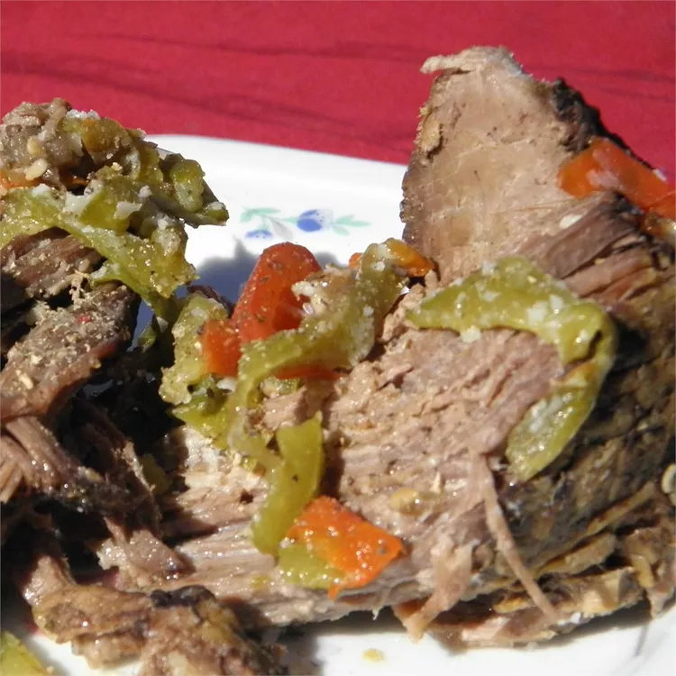

Italian Beef

This Italian Beef recipe features
a chuck roast, slow-cooked in a crock pot with garlic,
anise, and sesame seeds for incredible flavor.
Ingredients
- 1(4-pound) boneless beef chuck roast
- ½ cup all-purpose flour
- Salt and black pepper, to taste
- 2 tablespoons olive oil
- 2 cloves garlic, minced
- 1 cup water
- 1 tablespoon anise seeds
- 1 tablespoon sesame seeds
- 1 large green bell pepper, julienned
Instructions
- Prepare the Roast: Rinse and pat the roast dry.
Coat it evenly with flour, then season with salt and pepper.
- Sear the Roast: Heat olive oil in a skillet over medium-high heat.
Add the minced garlic, and then sear the roast on all sides until lightly browned.
- Slow Cook the Roast: Place the seared roast in a slow cooker and pour in 1 cup of
water. Cover and cook on Low for 5 hours.
- Add Seasoning: After 5 hours, add the anise and sesame seeds to the slow cooker.
Cover and cook for an additional 4 hours.
- Add Bell Pepper: Add the julienned green bell pepper and continue cooking for about
1 more hour, or until the meat is tender and can be easily pulled apart.
Enjoy your flavorful Italian beef!